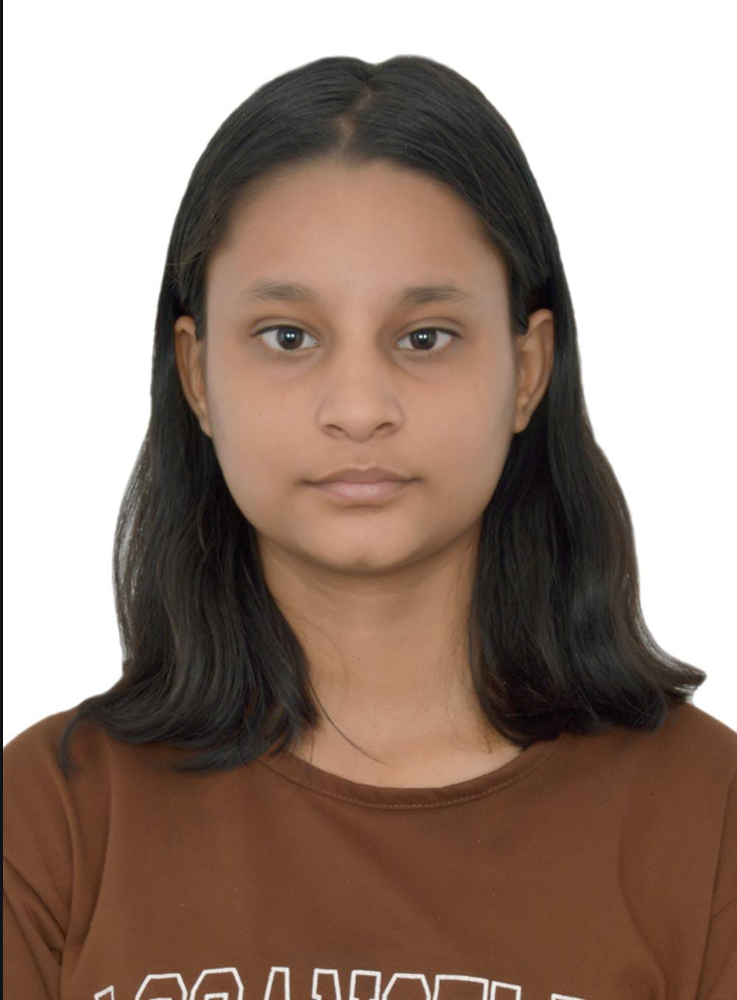

ENGINEERING STUDENT|ASPIRING FRONTED DEV

ABOUT ME:
I'm Jiya Sood a first semester BTECH student,This is my first ever project,and I'm really excited to start my journey in web development,currently I'm pursuing Engineering from a tier2 private university and building my journey as a fronted developer with a strong passion for creativity and problem.Along side coding, Dance has been a big part of my life.I started my dance journey in 6th grade and have had performed Multiple times on stage,Also i have social media pages with a reach around 8k-10k, where i share my dance videos.Currently learning trading with a clear understanding of core concepts such as candlestick patterns, support & resistance, trend analysis, and risk managemen-t.
| CLASS | SCORE | BOARD | SCHOOL |
|---|---|---|---|
| 10TH | 82% | CBSE | DC MODEL SENIOR SEC. SCHOOL |
| 12TH(NON MEDICAL) | 80% | CBSE | DC MODEL SENIOR SEC. SCHOOL |
SKILLS:
HTML-5 C++ & C-begginer to intermediate level coding Problem solving skills-Basic to medium level DSA problems PYTHON
PROJECTS:
PORTFOLIO WEBSITE :Portfolio Website This is my first self-made project using HTML. I designed it to showcase my skills,interests,and creativity.it reflects my journey as a beginner fronted developer and my passion for problem-solving.PYTHON BASED GAME :SNAKE GUN WATER Asimple command line game developed using python,implementing conditional logic,loops,and user input handling.This project was created to showcase my PYTHON programming skills.CARBONZY APP(ONGOING PROJECT): Currently working on defining the MVP app structures and user flow for a platform thatenables user to earn carbon credits through eco-friendly actions.
EMAIL: jiyasood188@gmail.com
PHONE: +91-9991844437
ADDRESS: HARYANA,AMBALA